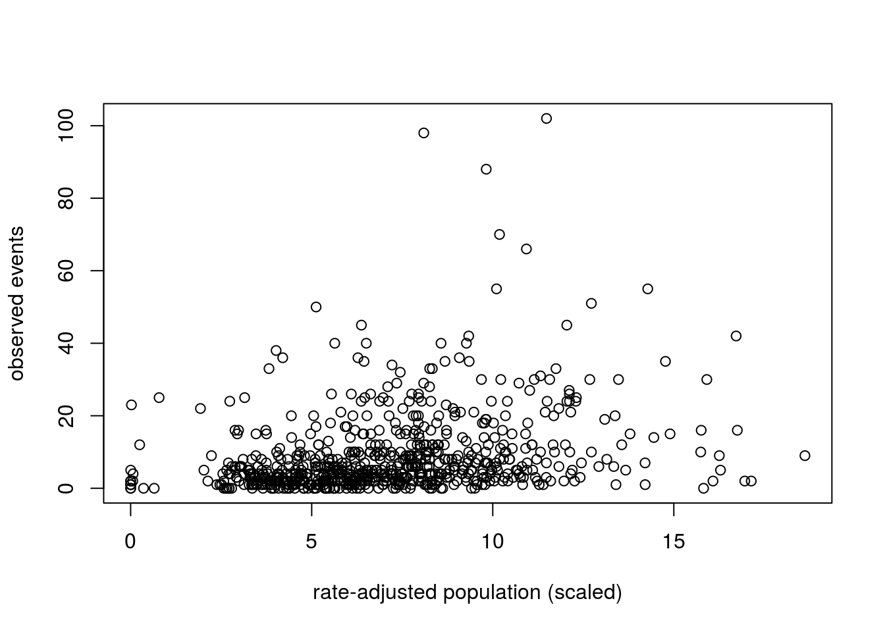
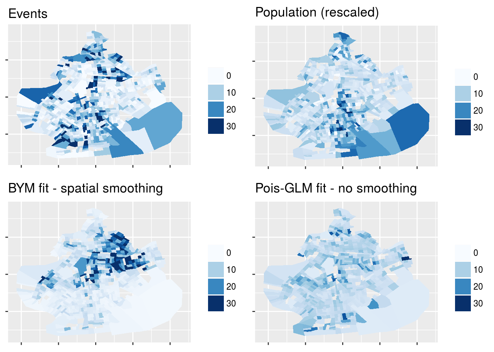

When data has a spatio-temporal structure and when observations from neighboring regions exhibit higher correlation than observations between distant regions, this correlation can be accounted for using the class of spatial models called “CAR” models (Conditional Auto-Regressive) introduced by Besag (Besag 1974). Intrinsic Auto-Regressive (IAR) models are a subclass of CAR models. The Besag York Mollié (BYM) model is a lognormal Poisson model which includes both an IAR component for spatial smoothing and an ordinary random-effects component for non-spatial heterogeneity. This case study covers how to efficiently code these models in Stan.
All models and data files are available in the Stan example-models GitHub repo for Stan case studies: car-iar-poisson. All commands should be run from the directory stan-dev/example-models/knitr/car-iar-poisson.
Given a set of observations taken at \(n\) different areal units of a region with a number of dimensions \(D\) (for spatio-temporal data, this number is between 1 and 4 as there are 1-3 spatial dimensions and 1 time dimension), spatial interactions between regions \(n_i\) and \(n_j\) can be modelled conditionally as a spatial random variable \(\mathbf{\phi}\), which is an \(n\)-length vector \(\mathbf{\phi} = ({\phi}_1, \ldots, {\phi}_n)^T\).
We represent spatial relationship between the \(n\) areal units as an adjacency matrix \(W\) with dimensions \(n \times n\) where entries \(w_{ij}\) and \(w_{ji}\) are positive when regions \({n_i}\) and \({n_j}\) are neighbors and zero otherwise. The neighbor relationship \(i \sim j\) is defined in terms of this matrix: the neighbors of region \(i\) are those regions who have non-zero entries in row or column \(i\). This encoding defines a lattice structure over the \(n\) areal units.
Besag (1974) uses results from the physics of lattice systems of particles and the Hammersley-Clifford theorem provide an equivalence between a local specification of the conditional distribution of each particle given its neighboring particles and the global specification of the joint distribution of all particles. This specification of the joint distribution via the local specification of the conditional distributions of the individual variables is a Markov random field (MRF) specification. The conditional distribution for each \({\phi}_i\) is specified in terms of a mean and precision parameter \(\tau\) as:
\[ p \left( { \phi }_i \, \vert\, {\phi}_j \, j \neq i, {{\tau}_i}^{-1} \right) = \mathit{N} \left( \alpha \sum_{i \sim j} {w}_{ij} {\phi}_j,\tau_i^{-1} \right), i,j = 1, \ldots, n \]
The corresponding joint distribution can be uniquely determined from the set of full conditional distributions by introducing a fixed point from the support of \(p\) and then using Brook’s Lemma to factor the set of conditional distributions into a joint distribution which is determined up to a proportionality constant (see Banerjee, Carlin, and Gelfand, 2004, sec. 3.2):
\[ \mathbf{\phi} \sim \mathit{N} \left(\mathbf{0}, \left[D_{\tau}(I - \alpha B)\right]^{-1} \right) \]
where
The construction of the spatial proximity matrix \(B\) determines the class of CAR model structure. The model is an Intrinsic Auto-Regressive (IAR) model when:
The corresponding conditional distribution specification is:
\[ p \left( { \phi }_i \, \vert\, {\phi}_j \, j \neq i, {{\tau}_i}^{-1} \right) = \mathit{N} \left( \frac{\sum_{i \sim j} {\phi}_{i}}{d_{ii}}, \frac{1}{d_{ii} {\tau}_i} \right)\]
where \(d_{ii}\) is the number of neighbors for region \(n_i\). Intuitively, the individual spatial random variable \({\phi}_j\) for region \(n_j\) with neighbors \(N(i)\) is normally distributed with a mean equal to the average of its neighbors. Its variance decreases as the number of neighbors increases.
The joint distribution simplifies to the pairwise difference formulation:
\[\phi \sim N(0, [\tau \, (D - W)]^{-1}).\]
which rewrites to:
\[ p(\phi | \tau) \propto \frac{1}{{\tau}^\frac{n}{2}} \exp \left\{ {- \frac{1}{2\tau}} \sum_{i \sim j}{({\phi}_i - {\phi}_j)}^2 \right\} \]
The above conditions for the IAR model produce an improper distribution because setting \(\alpha = 1\) creates a singular matrix \((D - W)\), see Besag and Kooperberg 1995. Furthermore, the pairwise distance formulation of the joint distribution is non-centered; adding any constant to all of the elements of \(\phi\) leaves the joint distribution unchanged. To correct this, we add the constraint \(\sum_{i} {\phi}_i = 0\).
While this IAR model is non-generating in that it cannot be used as a model for the data, it can be used as a prior as part of a hierarchical model, which is the role it plays in the BYM model.
Adding a CAR spatially structured error term to a multi-level GLM provides spatial smoothing of the resulting estimates. For count data, e.g. incidents of disease or accidents, Poisson CAR models are available via R, BUGS, and JAGS as well as INLA (Integrated Nested Laplace Approximation) which is a fast alternative to MCMC, (INLA trades speed and scalability for accuracy, per the “no free lunch” principle).
The lognormal Poisson model proposed in Besag York Mollié 1991 is used for count data in biostatistics and epidemiology. It includes both an IAR component for spatial smoothing and an ordinary random-effects component for non-spatial heterogeneity. Banerjee Carlin and Gelfand 2003, section 5.4, presents the details of this model and its difficulties, together with a WinBUGS implementation which they use to fit the Scottish lip cancer dataset from Clayton and Kaldor 1987. Using the notation of Banerjee et al., the Besag York Mollié model is:
\[ Y_i \vert \psi_i \sim Poisson ( E_i \, e^{\psi_i}), \]
for \(i \in 1:N\), where
\[ \psi = x \beta + \theta + \phi \]
where
\(x\) is the matrix of explanatory spatial covariates, so that \(x_i\) is the vector of covariates for areal unit \(i\). The coefficients \(\beta\) are often called “fixed effects.”
\(\theta\) is an ordinary random-effects components for non-spatial heterogeneity.
\(\phi\) is an IAR spatial component.
The pairwise difference formulation of the IAR spatial component \(\phi\) is non-centered, thus models with include both an IAR spatial effects component and an intercept term are non-identifiable. Adding the constraint that \(\phi\) must sum to zero centers it, allowing the model to fit both the fixed-effect intercept \(\beta\_0\) as well as \(\phi\) and \(\theta\).
A Stan model which implements the BYM model for univariate data plus offset is in the file bym_predictor_plus_offset.stan.
data {
int<lower=0> N; // num regions
int<lower=0> N_edges; // num edges, (undirected)
int<lower=1, upper=N> node1[N_edges]; // node1[i] adjacent to node2[i]
int<lower=1, upper=N> node2[N_edges]; // node1[i] adjacent to node2[i]
int<lower=0> y[N]; // count outcomes
vector[N] x; // predictor
vector<lower=0>[N] E; // exposure
}
transformed data {
vector[N] log_E = log(E);
}
parameters {
real beta0; // intercept
real beta1; // slope
real<lower=0> tau_theta; // precision of heterogeneous effects
real<lower=0> tau_phi; // precision of spatial effects
vector[N] theta_std; // standardized heterogeneous effects
vector[N - 1] phi_std_raw; // raw, standardized spatial effects
}
transformed parameters {
real<lower=0> sigma_theta = inv(sqrt(tau_theta)); // scale of heterogeneous effects
vector[N] theta = theta_std * sigma_theta; // non-centered parameterization
real<lower=0> sigma_phi = inv(sqrt(tau_phi)); // scal of spatial effects
vector[N] phi;
phi[1:(N - 1)] = phi_std_raw;
phi[N] = -sum(phi_std_raw);
phi = phi * sigma_phi; // non-centered parameterization
}
model {
y ~ poisson_log(log_E + beta0 + beta1 * x + theta + phi);
target += -0.5 * dot_self(phi[node1] - phi[node2]);
beta0 ~ normal(0, inv(sqrt(1e-5))); // Carlin WinBUGS priors
beta1 ~ normal(0, inv(sqrt(1e-5)));
theta_std ~ normal(0, 1);
tau_theta ~ gamma(3.2761, 1.81);
tau_phi ~ gamma(1, 1);
}
generated quantities {
vector[N] eta = phi + theta;
real sd_phi = sd(phi);
real sd_theta = sd(theta);
real psi = sd_phi / (sd_theta + sd_phi); // stat from Banerjee et al.
}In the next sections we discuss the data structures and coding idioms used to insure good fit and efficient performance.
The information needed to compute the IAR spatial variance component of the model is:
A straightforward encoding of the adjacency matrix is as a square matrix with dimensions equal to the number of areal units. Depending on the regularity or irregularity of areal boundaries, the number of neighbors for each region may vary. In a completely regular grid structure each region will have 4 neighbors with which it shares an edge and another 4 regions diagonally adjacent, thus in any row or column, the number of non-zero entries is 4 or 8. The size of the adjacency matrix grows quadratically, while the number of non-zero entries grows linearly, thus the matrix quickly becomes very sparse. Representing a sparse matrix as a full matrix is expensive both in terms of storage and computation; an adjacency matrix for \(n\) areal units requires \(n^2\) units of memory, and walking over all entries in this matrix requires many needless lookups.
The information needed from \(D\) for the IAR spatial component is an array or vector of length \(n\) where each entry \(n_i\) contains the number of neighbors for region \(n_i\).
The information needed from the adjacency matrix is a list of the {i,j} coordinates of the non-zero entries in this matrix. Since these entries all have value \(1\), we don’t need to store this value itself. Since the adjacency matrix is symmetric, we only need store the entries in the upper or lower triangular matrix.
The data block of the Stan model declares these structures as:
int<lower=0> N; // num regions
int<lower=0> N_edges; // num edges, (undirected)
int<lower=1, upper=N> node1[N_edges]; // node1[i] adjacent to node2[i]
int<lower=1, upper=N> node2[N_edges]; // node1[i] adjacent to node2[i]To wrangle the data into this format, we have written two R helper functions:
The function mungeCARdata4stan is used to translate spatial data from the format required by WinBUGS car.normal function. It takes two inputs, adj which is a list of all neighbors by site id and num which is a list of the number of neighbors for each site. It returns a list containing the input data objects N, N_edges, node1, and node2. The function nbdata4stan is used to translate “nb” objects generated by R’s spdep package. It takes an nb object as input and returns a list containing the input data objects N, N_edges, node1, and node2.
For both of these functions, the conditional on the innermost loop restricts the edges recorded in the parallel arrays node1 and node2 to entries in the upper triangular part of the adjacency matrix.
The model block specifies the vectorized Poisson regression, working on the log scale:
y ~ poisson_log(log_E + beta0 + beta1 * x + theta + phi);We use the non-centered parameterization for both random effects components theta and phi.
The values for the priors are taken from a model on Brad Carlin’s website, also discussed in Banerjee, Carlin, and Gelfand, 2004, chapter 5:
beta0 ~ normal(0, inv(sqrt(1e-5)));
beta1 ~ normal(0, inv(sqrt(1e-5)));
theta_std ~ normal(0, 1);
tau_theta ~ gamma(3.2761, 1.81);
tau_phi ~ gamma(1, 1);Computation of the IAR spatial component \(\phi\) is distributed across the transformed parameters block and the model block.
\(\phi\) is constrained \(\sum_{i} {\phi}_i = 0\). To meet the sum-to-zero constraint we declare the parameter vector phi_std_raw of length \(N-1\). In the transformed parameters block we declare the \(N\)-length vector phi and ensure that it is centered on zero by defining the N-th element as the negation of the sum of the elements 1 through N − 1.
parameters {
...
vector[N - 1] phi_std_raw; // raw, standardized spatial effects
...
}
transformed parameters {
...
phi[1:(N - 1)] = phi_std_raw;
phi[N] = -sum(phi_std_raw);
phi = phi * sigma_phi;
...
}Computation of the pairwise difference is done in the model block. From above, \(\phi\) is a multivariate normal, with variance \([\tau (D - W)]^{-1}\), which rewrites to:
\[ p(\phi | \tau) \propto \frac{1}{{\tau}^\frac{n}{2}} \exp \left\{ {- \frac{1}{2\tau}} \sum_{i \sim j}{({\phi}_i - {\phi}_j)}^2 \right\} \]
The corresponding Stan statement is:
target += -dot_self(phi[node1] - phi[node2]);The expression phi[node1] - phi[node2] uses Stan’s multiple indexing feature to specify an array of integer indexes, thus this is a vectorized subtraction operation, the result of which is a vector. The dot_self function which returns the dot product of this vector with itself, thus computing sum of the squares. Because Stan is computing \(\phi\) on the unit scale, \(\tau\) is 1, and drops out. The \(\frac{1}{2}\) drops out because of symmetry: by using only the upper triangular entries in the adjacency matrix, we want to count them twice. Thus by clever construction of the prior, the data, vectorization, and the fact that Stan computes densities on the unit scale only up to a proportional constant, we can efficiently compute the IAR spatial component \(\phi\).
To check this model, we run it over the version of the Scotland Lip Cancer dataset from Brad Carlin’s software page, in file “Lipsbrad.odc”. This file contains both the data and the program and inits for the WinBUGS model presented in Banerjee, Carlin, and Gelfand, 2004, chapter 5. Following the Carlin model, where covariate aff is divided by 10, we multiply the x covariate by 0.1, as multiplication is more efficient than division. A Stan model which matches the Carlin model is in the file bym_carlin_scotland.stan. It is exactly the same as the above model, save for the Poisson regression which is:
y ~ poisson_log(log_E + beta0 + 0.1 * beta1 * x + theta + phi);We run this program using the Rstan interface via the R script: fit_scot_stan.R
After running this script, we print a subset of the fitted parameters to check that the sampler was able to fit the data; all Rhat values should be very close to 1.0, and the number of effective samples should be in the thousands.
Inference for Stan model: bym_carlin_scotland.
4 chains, each with iter=2000; warmup=1000; thin=1;
post-warmup draws per chain=1000, total post-warmup draws=4000.
mean se_mean sd 2.5% 97.5% n_eff Rhat
lp__ 738.2810 0.2892 9.2946 719.1322 755.3245 1033 1.0012
beta0 -0.2404 0.0040 0.1834 -0.6113 0.0963 2115 1.0001
beta1 0.3489 0.0042 0.1887 -0.0166 0.7141 2046 0.9999
tau_theta 4.6202 0.0211 1.3359 2.4931 7.7349 4000 1.0011
tau_phi 28.3956 0.1160 5.2146 18.9391 39.1702 2021 0.9995
sigma_theta 0.4797 0.0011 0.0695 0.3596 0.6333 4000 1.0007
sigma_phi 0.1901 0.0004 0.0180 0.1598 0.2298 1961 0.9997
psi 0.6216 0.0008 0.0438 0.5302 0.7012 2806 0.9995
eta[1] 1.3674 0.0055 0.3450 0.6600 2.0099 4000 0.9993
eta[2] 1.1551 0.0040 0.2254 0.7041 1.5922 3190 0.9992
Samples were drawn using NUTS(diag_e) at Tue Jun 27 21:02:04 2017.
For each parameter, n_eff is a crude measure of effective sample size,
and Rhat is the potential scale reduction factor on split chains (at
convergence, Rhat=1).The program and data for the WinBUGS model, are available from Brad Carlin’s software page, in file “Lipsbrad.odc”.
The WinBUGS model is in file carlin_bym.txt.
carlin_bym <- function() {
for (i in 1 : N) {
y[i] ~ dpois(mu[i])
log(mu[i]) <- log(E[i]) + beta0 + beta1*x[i]/10 + phi[i] + theta[i]*tau_theta
theta[i] ~ dnorm(0.0, 1.0) # non-centered theta, std normal
eta[i] <- theta[i] + phi[i]
}
phi[1:N] ~ car.normal(adj[], weights[], num[], tau_phi)
beta0 ~ dnorm(0.0, 1.0E-5) # vague prior on grand intercept
beta1 ~ dnorm(0.0, 1.0E-5) # vague prior on covariate effect
tau_theta ~ dgamma(3.2761, 1.81)
tau_phi ~ dgamma(1.0, 1.0)
sd_theta <- sd(theta[]) # marginal SD of heterogeneity effects
sd_phi <- sd(phi[]) # marginal SD of clustering (spatial) effects
psi <- sd_theta / (sd_theta + sd_phi) # proportion spatial variance
}The data file carlin_data.R contains the following objects:
O: the observed lip cancer case counts on a per-county basisaff: an area-specific continuous covariate that represents the proportion of the population employed in agriculture, fishing, or forestry (AFF)E: the an expected number of cases, used as an offset,adj: a list of region ids for adjacent regionsnum: a list of the number of neighbors for each regionData items adj and num are used as input to the WinBUGS function car.normal which computes the values of the elements for the zero-centered spatial component \(\phi\).
In the WinBUGS program, the formula for the Poisson regression is:
O[i] ~ dpois(mu[i])
log(mu[i]) <- log(E[i]) + beta0 + beta1*aff[i]/10 + phi[i] + theta[i](Note that the covariate term aff is divided by 10).
To compare this model to the Stan model, we include an R script to run the WinBUGS model in OpenBUGS on the same data: fit_scot_bugs.R After running the model, we use the function rstan::monitor to compare the Stan fit with OpenBUGS fit of the WinBUGS model. The WinBUGS model uses the suffix “.h” for the heterogeneous random effects component which is “theta” in the Stan model, and it uses the suffix “.c” for the IAR spatial effect component which is “phi” in the Stan model. The WinBUGS program “alpha” corresponds to the Stan quantity “psi” and the WinBUGS “xi” corresponds to the Stan quantities “eta”.
mean se_mean sd 2.5% 25% 50% 75% 97.5% n_eff Rhat
beta0 -0.292821 0.004952 0.16362 -0.62310 -0.402500 -0.291000 -1.829e-01 0.02528 1092 1.0024
beta1 0.430032 0.005346 0.15983 0.11229 0.324500 0.431900 5.372e-01 0.73861 894 1.0032
tau.h 4.630522 0.025351 1.28887 2.50900 3.712500 4.490000 5.402e+00 7.52117 2585 1.0055
tau.c 2.517394 0.026565 1.00376 1.07000 1.790000 2.348000 3.057e+00 4.92312 1428 1.0014
sd.h 0.428034 0.001392 0.06218 0.31800 0.384600 0.424000 4.663e-01 0.56290 1996 1.0064
sd.c 0.576708 0.002922 0.09117 0.40339 0.514800 0.574900 6.357e-01 0.76640 974 1.0058
alpha 0.572579 0.001709 0.05567 0.45330 0.537900 0.576200 6.115e-01 0.67130 1061 1.0103
xi[1] 1.232006 0.004781 0.34157 0.53658 1.009000 1.239000 1.469e+00 1.88002 5104 1.0007
xi[2] 1.066722 0.004442 0.20843 0.66020 0.925175 1.068000 1.208e+00 1.47402 2202 1.0011These estimates are not within se_mean of one another, although they do get similar estimates for the slope and intercept terms of the poisson regression as well as the quantities eta and xi. As noted above, the Stan models use the non-centered parameterization for both theta and phi. This could also be due to the difference between the Gibbs sampler and the NUTS HMC sampler.
To demonstrate the scalability of using Stan to compute a spatial IAR component, we analyze the Brooklyn subset of the dataset from Small-area spatiotemporal analysis of pedestrian and bicyclist injuries in New York City which was compiled from all reported traffic accidents involving a car and either a pedestrian or bicyclist in New York City in 2001, localized to the census tract level.
The traffic accident data is in the file nyc_ped_subset.data.R. It contains a list of census tract IDs, the count of events per tract (y), and the rate-adjusted population per tract (x).

The Stan program is in the file bym_predictor_only.stan. This program implements the BYM model for univariate data without an offset term.
Spatial information is in a set of files in directory nycTracts10. The spatial information for the census tracts is obtained via the R maptools and spdep packages. We use these packages to create an nb object which is a list of all neighbors for each census tract. Each list entry is itself a list containing the relative index of the neighboring regions. We have written an R helper function nbdata4stan that take an nb object as input and returns a list containing the input data objects N, N_edges,node1, andnode2`.
We fit this model using only the Brooklyn census tracts, so that all areal units have at least one neighbor. There are 709 census tracts, more than 10x’s the number of counties in the Scotland lip cancer dataset. We assemble the Brooklyn data and fit the model Rstan interface via the R script: fit_brooklyn.R
This script uses R’s proc.time() function to measure how long this model takes to fit the data. On a MacBook Pro with 8G of memory and 2 processors, the reported times in seconds are:
user system elapsed
21.097 1.632 200.232 The Rhat and Neff numbers indicates that the model has fit the data:
Inference for Stan model: bym_predictor_only.
4 chains, each with iter=5000; warmup=2500; thin=1;
post-warmup draws per chain=2500, total post-warmup draws=10000.
mean se_mean sd 2.5% 50% 97.5% n_eff Rhat
lp__ 9708.89 0.80 36.32 9636.93 9709.29 9779.36 2063 1
beta0 1.19 0.00 0.09 1.02 1.19 1.36 3226 1
beta1 0.07 0.00 0.01 0.05 0.07 0.09 2873 1
tau_theta 4.33 0.01 0.60 3.32 4.27 5.64 2826 1
tau_phi 354.64 0.35 18.93 318.79 354.36 392.69 2877 1
sigma_theta 0.48 0.00 0.03 0.42 0.48 0.55 2805 1
sigma_phi 0.05 0.00 0.00 0.05 0.05 0.06 2858 1
psi 0.64 0.00 0.02 0.61 0.64 0.67 2865 1
eta[1] -1.17 0.01 0.51 -2.20 -1.15 -0.24 10000 1
eta[2] 1.24 0.00 0.26 0.72 1.25 1.73 10000 1
eta[3] -1.40 0.01 0.59 -2.62 -1.37 -0.35 10000 1
eta[4] -0.50 0.00 0.43 -1.41 -0.47 0.28 10000 1
eta[709] -0.54 0.00 0.45 -1.47 -0.52 0.28 10000 1
Samples were drawn using NUTS(diag_e) at Tue Jun 27 21:06:41 2017.
For each parameter, n_eff is a crude measure of effective sample size,
and Rhat is the potential scale reduction factor on split chains (at
convergence, Rhat=1).We can compare these results to using a simple Poisson GLM to fit this data:
Call: glm(formula = y ~ x, family = "poisson")
Coefficients:
(Intercept) x
1.3402 0.1117
Degrees of Freedom: 708 Total (i.e. Null); 707 Residual
Null Deviance: 7201
Residual Deviance: 6354 AIC: 8741We use ggplot2 and related packages to plot the Brooklyn census tracts colored by event counts, scaled population, and the generated quantity “mu” which recovers the number of events based on the data and the samples. Note that some Brooklyn census tracts are not in the study.
grid.arrange(events_plot, pop_plot, bym_plot, poisson_plot, ncol=2)
The models developed in this case study allow for analysis of relatively large datasets; for the last model in this case study, given a dataset with 709 areal units, the fitted model had approximately 1400 parameters.
The scalability of IAR models derives from the nature of the covariance matrix and the fact that Stan computes proportional densities, so that constant terms drop out. Furthermore, because spatial adjacency matrices are sparse for large numbers of areal units \(N\), efficient representations of the contents of these matrices provides substantial speedup over trying to compute using a full \(N \times N\) matrix.
Many thanks to Daniel Simpson, Rob Trangucci, Imad Ali, Andrew Gelman, and Bob Carpenter for all their help and encouragement.
Banerjee, Sudipto, Alan E. Gelfand, and Bradley P. Carlin. “Hierarchical modeling and analysis for spatial data.” (2003).
Besag, Julian. “Spatial interaction and the statistical analysis of lattice systems.” Journal of the Royal Statistical Society. Series B (Methodological) (1974): 192-236.
Besag, Julian, and Charles Kooperberg. “On conditional and intrinsic autoregression.” Biometrika (1995): 733-746.
Besag, J., J. York, and A. Mollie. “Bayesian image restoration with two applications in spatial statistics (with discussion) Ann Inst Stat Math. 1991; 43: 1–59. doi: 10.1007.” BF00116466.[Cross Ref].
Haran, Murali. “Gaussian random field models for spatial data.” Handbook of Markov Chain Monte Carlo (2011): 449-478.
Code: Copyright (2017) Columbia University. Released under the BSD 3-clause license.
Text: Copyright (2017) Mitzi Morris. Released under the the CC BY-NC 4.0 license.